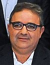

Fue habitada por población originaria de Amérca por varios milenios hasta la llegada de los conquistadores españoles a mediados del siglo XVII. Desde ese entonces, ha recibido varios grupos de inmigrantes, españoles en su mayoría, aunque a diferencia de otras provincias argentinas, estos no han superado a la población autóctona. De la mezcla de ambos grupos surgió la actual población de la provincia, compuesta principalmente por mestizos. Obtuvo su autonomía provinicial el 25 de agosto de 1821 y se unificó a la nación Argentina al sancionarse la constitución de 1853. Su economía es una de las más diversificadas del país, ocupándose fundamentalmente de la minería, la industria, el comercio, el turismo, la ganadería y la agricultura. Además, ocupa el puesto puesto número 12 en el ranking de desarrollo humano de las jurisdicciones de primer orden argentinas.
La capital de catamarca es SAN FERNANDO DEL VALLE DE CATAMARCA
| Gobernador | Inicio | Fin | Partido politico |
|---|---|---|---|
|
Arnoldo Anìbal Castillo |
10 de diciembre de 1991/10 de diciembre de 1995 | 10 de diciembre de 1995/10 de diciembre de 1999 | UCR |
|
Oscar Castillo |
10 de diciembre de 1999/10 de diciembre de 2003 | 10 de diciembre de 2003/10 de diciembre de 2007 | UCR |
|
Eduardo Brizuela del Moral |
10 de diciembre de 2003/10 de diciembre de 2007 | 10 de diciembre de 2007/10 de diciembre de 2011 | UCR |
|
Lucìa Corpacci |
10 de diciembre de 2011/10 de diciembre de 2015 | 10 de diciembre de 2015/10 de diciembre de 2019 | PJ |
| 
Raùl Jalil |
10 de diciembre de 2019 | actualidad | PJ |
Catamarca es una de las 23 provincias que componen a la República Argentina, situada en la Región del Norte Grande Argentino subregión noroeste, limita al Norte con la provincia de Salta, al noreste con Tucumán, al este con Santiago del Estero, al suroeste con La Rioja, al Sur con Córdoba y al Oeste con Chile.
El Clima es templado continental con una precipitación media anual entre los 500 y 700 mm en el este (en algunos sectores las precipitaciones superan los 1000 mm), pero con marcada disminución hacia el Oeste (Puna Cordillerana con menos de 150 mm), compensada parcialmente por nieve.
Su economía es una de las más diversificadas del país, ocupándose fundamentalmente de la minería, la industria, el comercio, el turismo, la ganadería y la agricultura. Además ocupa el puesto puesto número 12 en el ranking de desarrollo humano de las jurisdicciones de primer orden argentinas.
poblaciòn de 367.828 habitantes.
La vegetación varía según la zona. En el oeste provincial corresponde a la de desierto y semidesierto donde pueden encontrarse arbustos de baja estatura y adaptados a la falta de agua además de cactus. Mientras que en las zonas más húmedas puede observarse un cambio contundente en la flora, hacia la zona este y centro encontramos montes de algarrobos, juncos y pastos. Posee también una franja selvática perteneciente al bioma de "Yungas" en donde se destaca el aliso, el junco y el Horco molle
Volver al Indice